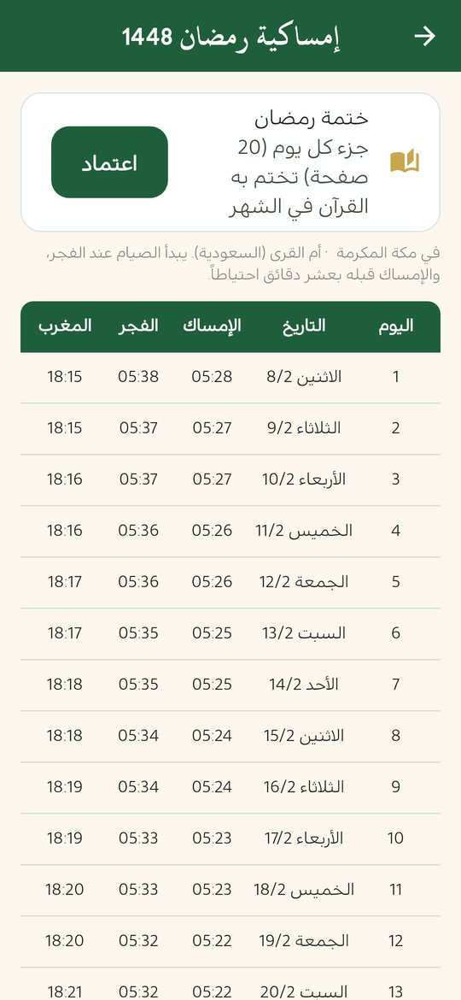
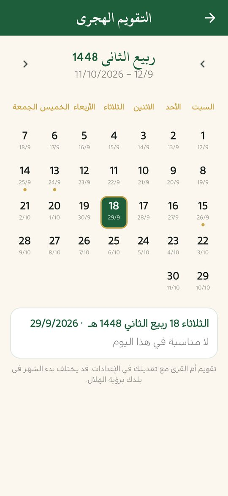

إمساكية رمضان وعدّاد الإفطار
في «منهج حياة» إمساكية الشهر كاملة لمدينتك، وعدّ تنازلي للإفطار ولانتهاء السحور، وتذكير بالسحور قبل الفجر، وزر لاعتماد ختمة رمضان بجزء كل يوم. وكل ذلك يعمل دون إنترنت.
ملف APK لأندرويد 7.0 فأحدث · مجاني · دون إعلانات

إمساكية الشهر لمدينتك
جدول كامل لأيام الشهر بأوقات الإمساك والفجر والمغرب لمدينتك، تُحسب على هاتفك. تفتحها من إعدادات الصلاة.
عدّاد الإفطار والسحور
- عدّ تنازلي للإفطار ولانتهاء وقت السحور.
- عدّ للأيام الباقية على رمضان يبدأ من منتصف شعبان، في تبويب الصلاة.
- تذكير بالسحور قبل الفجر.
ختمة رمضان
زر «اعتماد» في الإمساكية يضبط وردك على جزء واحد كل يوم، فتُتمّ القرآن خلال الشهر إن التزمت. ويتابع التطبيق تقدّمك تلقائياً.
التقويم الهجري والأيام الفاضلة
التقويم الهجري الشهري يعرض التاريخين الهجري والميلادي ويميّز رمضان وعيد الفطر والأيام الفاضلة، ويذكّرك بصيام الاثنين والخميس إن فعّلت ذلك.

استعدّ لرمضان قبل بدايته
- اختر مدينتك وتأكد من طريقة الحساب المعتمدة في بلدك من إعدادات الصلاة.
- افتح الإمساكية وتحقق من أوقات الأيام الأولى مع تقويم مسجدك أو جهة الإفتاء في بلدك.
- فعّل تذكير السحور وتنبيهات الصلاة، واختر صوت الأذان الذي تحبه.
- اضغط «اعتماد» لتبدأ ختمة رمضان، أو أنشئ ختمة جماعية مع العائلة.
- حمّل السور التي تحب الاستماع إليها لتسمعها دون إنترنت.
متى يبدأ رمضان 1448؟
وفق تقويم أم القرى المعتمد في التطبيق يوافق أول رمضان 1448 هـ الثامن من فبراير 2027 تقريباً، وقد يختلف بيوم بحسب رؤية الهلال المعتمدة في بلدك. يمكنك أيضاً تعديل التاريخ الهجري في التطبيق بمقدار يوم أو يومين.
أسئلة شائعة
كيف أفتح إمساكية رمضان؟
من إعدادات الصلاة في التطبيق، وتظهر كذلك بطاقة العدّ التنازلي في تبويب الصلاة من منتصف شعبان.
هل تعمل الإمساكية بدون إنترنت؟
نعم، تُحسب المواقيت على الهاتف دون اتصال.
هل تناسب مدينتي؟
تختار مدينتك من القائمة أو تسمح بالموقع التقريبي، ثم تختار طريقة الحساب المعتمدة في بلدك.
كيف أتمّ القرآن في رمضان؟
اضغط «اعتماد» في الإمساكية ليضبط التطبيق وردك على جزء كل يوم، ثم تابع تقدّمك من شاشة الورد والختمة.
اقرأ أيضاً
حمّل منهج حياة مجاناً
القرآن والصلاة والذكر في تطبيق واحد، دون إعلانات ودون حساب.